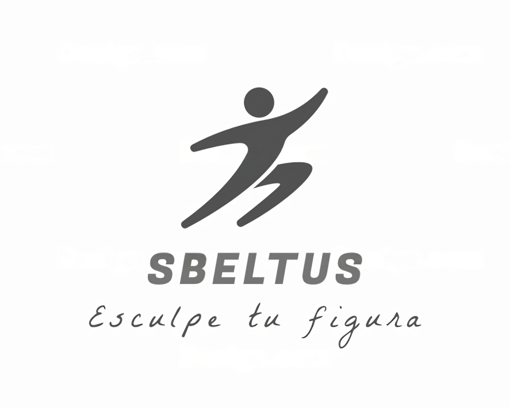
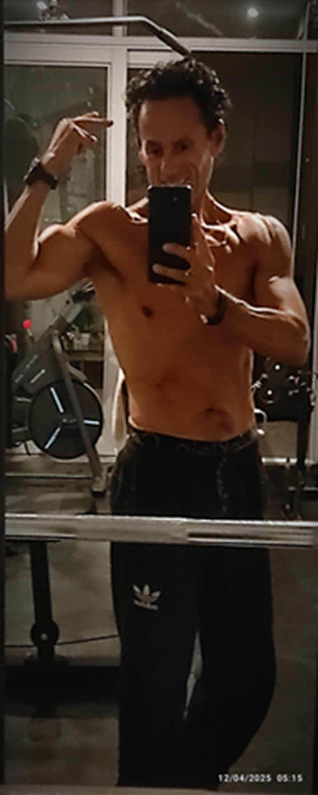
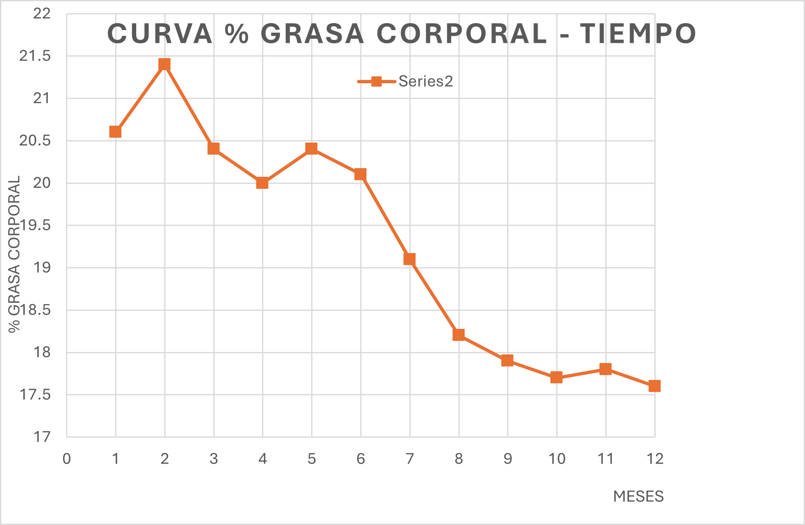
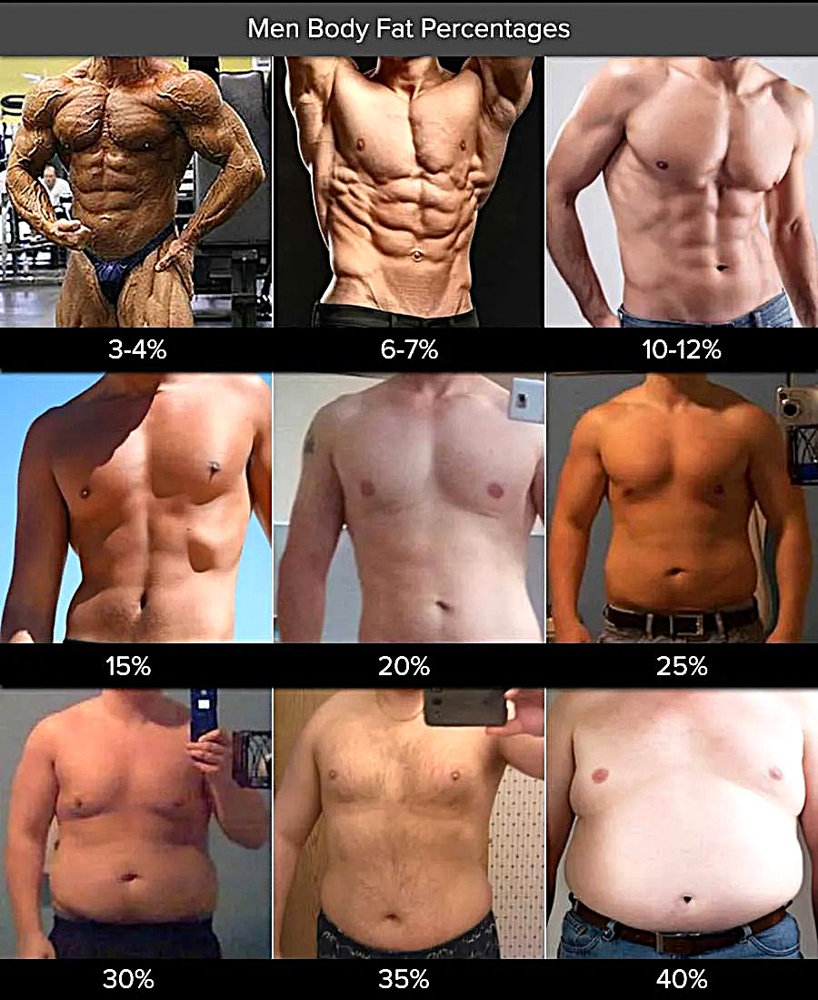
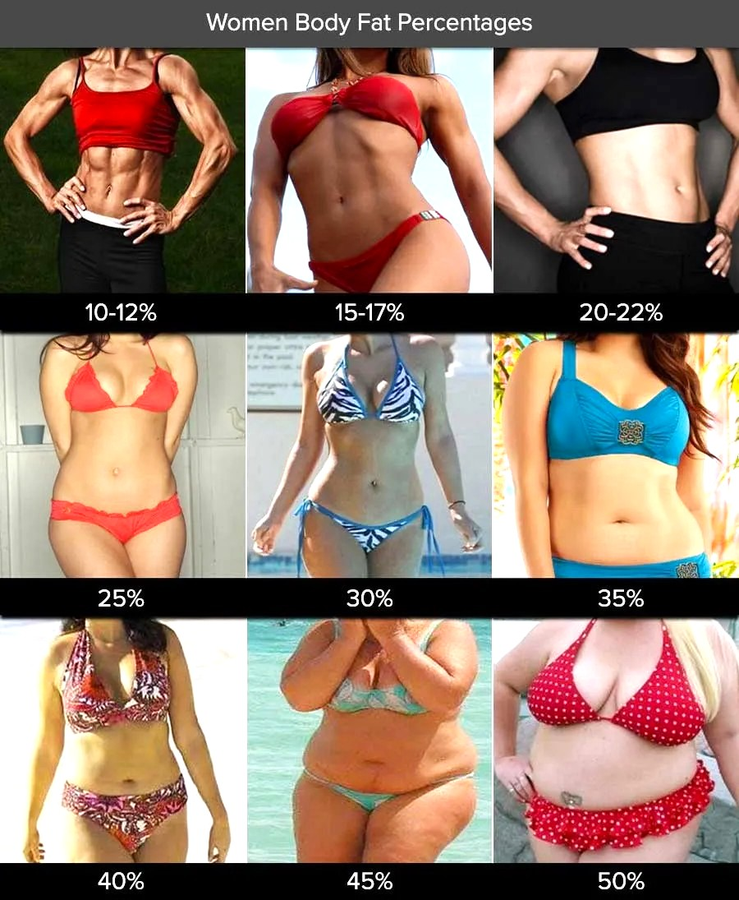

Salud de manera natural y sostenible

Soy una persona mayor que, como muchas otras, durante años no llevó un estilo de vida saludable en cuanto a alimentación y actividad física. No soy profesional del sector salud: soy ingeniero.
Sin embargo, con disciplina y constancia, logré transformar mis hábitos y reducir mi porcentaje de grasa corporal sin perder masa muscular, siguiendo una dieta hipocalórica y un proceso lento pero seguro. Descubrí que no existen atajos ni milagros: lo importante es la paciencia y la constancia.
Hoy comparto mi experiencia personal como una forma de inspiración y apoyo para quienes buscan mejorar su bienestar. Mi mensaje es claro: cada persona debe consultar siempre con su médico, nutricionista o especialista de confianza antes de iniciar cualquier proceso de cambio.
Recupera tu energía, fortalece tu bienestar y descubre que nunca es tarde para sentirte en plenitud. Con un método simple y prudente podrás cuidar tu peso y tu salud después de los 50. Porque pequeños cambios logran grandes resultados y hoy puedes comenzar tu camino hacia una vida más ligera y vital.
Aquí quiero mostrar los resultados obtenidos en mi proceso de pérdida de grasa corporal en un período de 12 meses, lo cual constituye una evidencia personal clara y precisa de cómo podemos conseguir reducir de manera saludable nuestro porcentaje de grasa corporal y por ende el peso corporal evitando perder masa muscular. Lo que quiero compartir contigo y que se muestra en el gráfico presenta mi proceso de reducción de peso en un período de 12 meses a una tasa promedio de 0.5 Kg por mes, y 6 Kg totales de reducción promedio en dicho período.
Pero aquí lo interesante es que los objetivos logrados pueden obtenerse a partir de diferentes condiciones de estado inicial, toda vez de que en mi caso no partí de un estado de obesidad, sino más bien en un sobrepeso de alrededor de 7 Kg. En otras palabras, inicié el proceso con un índice de masa corporal (IMC) de 20,6 logrando al término del período un IMC de 17,6.
Considero importante que tengamos presente el concepto de grasa corporal la misma que se constituye en la grasa subcutánea y grasa visceral entendiendo como la primera aquella que está inmediatamente por debajo de nuestra piel y la grasa visceral la que está alrededor de los órganos y que es quizás la más perjudicial. En tal sentido te sugiero visualizar las imágenes de referencia respecto a este concepto de porcentaje de grasa corporal de una manera práctica y aproximada para estimar en qué condición nos encontramos. Debo señalar que existen varios métodos de medición de la grasa corporal desde los más simples hasta los más sofisticados y costosos, por cierto, en mi experiencia he seguido la opción de bioimpedancia con un monitor manual y con balanza de pie con electrodos a fin de comparar resultados, los cuales sí varían entre sí.
Los siguientes gráficos muestran los avances personales en la reducción de grasa corporal, como evidencia del método utilizado en el programa SBELTUS.



Fuente de las imágenes: Healthline
También es preciso señalar que para este proceso, toda vez de que es controlado, se requieren algunos elementos básicos de medición que no son costosos de hecho, sin embargo, considero que lo más importante a tenerse en cuenta es el sincero y real deseo de mejorar nuestra salud. Esto implica asumir la responsabilidad de conseguir un objetivo por iniciativa propia y convicción de que sí es posible lograr esto, pero requiere una decisión firme, constancia y paciencia. Sin estos compromisos no se podrá conseguir nada y si bien es cierto esto implica un cambio de estilo de vida, la satisfacción y felicidad que se obtiene al lograr esculpir tu figura, es la mayor recompensa que puedes obtener y que de hecho tampoco significará privarse de los placeres sociales a los que estamos acostumbrados sin exageraciones por supuesto, pero llevando una vida saludable.
Es importante también tener en cuenta que nuestro organismo y su funcionamiento es el resultado de un proceso evolutivo en el cual todo se ha organizado, digámoslo así, a fin de tener energía disponible y almacenada, es por ello que es fundamental entender al menos de una forma básica o general que nuestro organismo responde a procesos bioquímicos y la fisiología es compleja pero eficiente en términos de cómo se aprovecha la energía almacenada. Entonces aquí viene el tema central pues la forma como obtenemos energía para nuestras actividades básicas y funcionamiento de nuestros órganos proviene de los alimentos que ingerimos, por lo que todo exceso de energía no se va a perder simplemente la vamos a almacenar. De una forma práctica o dicho en simples palabras, el exceso de energía lo vamos a observar cuando engordamos, y que no es otra cosa que tejido adiposo constituido por células especializadas llamadas adipocitos, las cuales tienen capacidad de hipertrofia e hiperplasia esto es, aumentando en volumen y cantidad respectivamente. En este punto debemos tener claro que la grasa no se quema, más bien se beta-oxida en las mitocondrias que son organelos celulares, encontrándose estas mitocondrias prácticamente en todas las células de nuestro cuerpo.
Debemos también tener claro que no engordamos de la noche a la mañana y es un proceso acumulativo, en el cual los adipocitos van almacenando triglicéridos los cuales están constituidos por la unión de una molécula de glicerol y de tres ácidos grasos. Ahora bien, cuando queremos perder peso lo que debería ocurrir es que se genere una lipólisis, es decir que ese enlace de triglicérido se rompa y se liberen los ácidos grasos hacia el torrente sanguíneo y que estos viajen hasta alguna célula de algún tejido que requiera de energía y a través de otros procesos ingrese a la célula de ese tejido y específicamente a la mitocondria para que se genere esa molécula energética conocida como ATP.
Encuentra publicaciones científicas y enlaces relacionados con la salud.
WhatsApp: +51 999 999 999